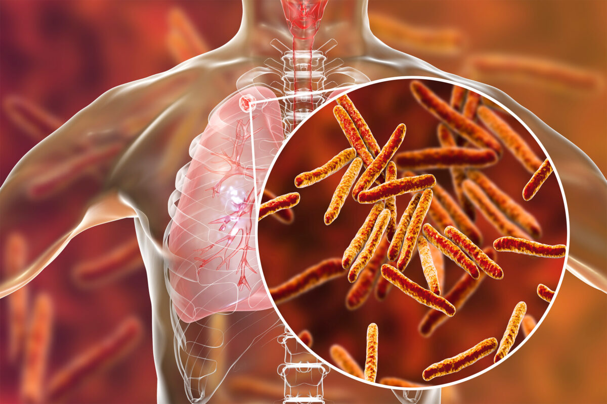

Tuberculosis
OVERVIEW
Tuberculosis (TB) is a potentially serious infectious disease that mainly affects your lungs. The bacteria that cause tuberculosis are spread from one person to another through tiny droplets released into the air via coughs and sneezes.
Once rare in developed countries, tuberculosis infections began increasing in 1985, partly because of the emergence of HIV, the virus that causes AIDS. HIV weakens a person's immune system so it can't fight the TB germs.
SYMPTOMS
Latent TB: A person with latent TB will have no symptoms, and no damage will show on a chest X-ray. However, a blood test or skin prick test will indicate that they have TB infection.
Active TB: A person with TB disease may experience a cough that produces phlegm, fatigue, a fever, chills, and a loss of appetite and weight. Symptoms typically worsen over time, but they can also spontaneously go away and return.
- Persistently swollen lymph nodes, or “swollen glands”
- Abdominal pain
- Joint or bone pain
- Confusion
- A persistent headache
- Seizures
TB can cause:
CAUSES
M. tuberculosis bacteria cause TB. They can spread through the air in droplets when a person with pulmonary TB coughs, sneezes, spits, laughs, or talks.
Only people with active TB can transmit the infection. However, most people with the disease can no longer transmit the bacteria after they have received appropriate treatment for at least 2 weeks.
Risk Factors:
People with weakened immune systems are most likely to develop active TB. The following are some issues that can weaken the immune system.
Some other health issues that weaken the immune system and can increase the risk of developing TB include:
- Low body weight
- Substance abuse disorders
- Diabetes
- Silicosis
- Severe kidney disease
- Head and neck cancer
- Smoking
- Hiv
PREVENTION
- getting a diagnosis and treatment early
- staying away from other people until there is no longer a risk of infection
- wearing a mask, covering the mouth, and ventilating rooms
Ways of preventing TB from infecting others include:
TREATMENT
- The person’s age and overall health
- Whether they have latent or active TB
- The location of the infection
- Whether the strain of TB is drug resistant
- Treatment for latent TB can vary. It may involve taking an antibiotic once a week for 12 weeks or every day for 9 months.
- Treatment for active TB may involve taking several drugs for 6–9 months. When a person as a drug resistant strain of TB, the treatmen twill be more complex.
With early detection and appropriate antibiotics, TB is treatable. The right type of antibiotic and length of treatment will depend on:
WHAT TO EAT
- Banana
- Cereal porridge
- Peanut chikki
- Wheat
- Ragi are quite beneficial for TB patients.
- Orange
- Mango
- Sweet pumpkin
- Carrots
- Guava
- Amla
- Tomato
- Nuts and seeds are an excellent source of Vitamin A, C and E.